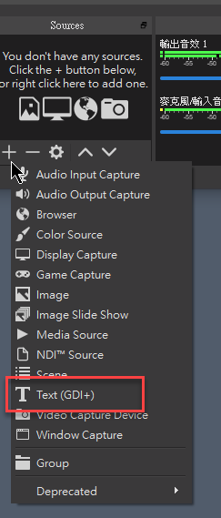
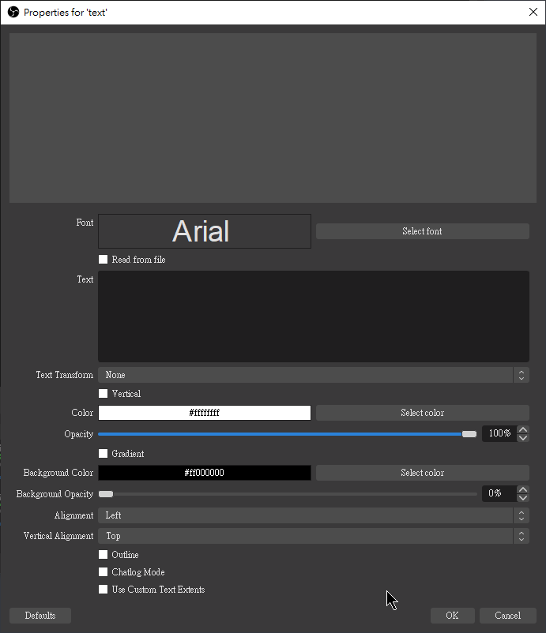
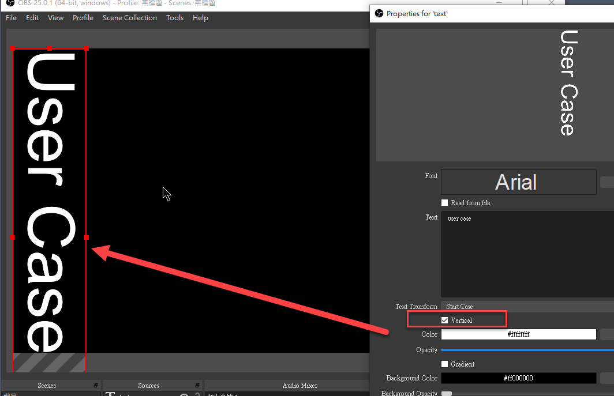
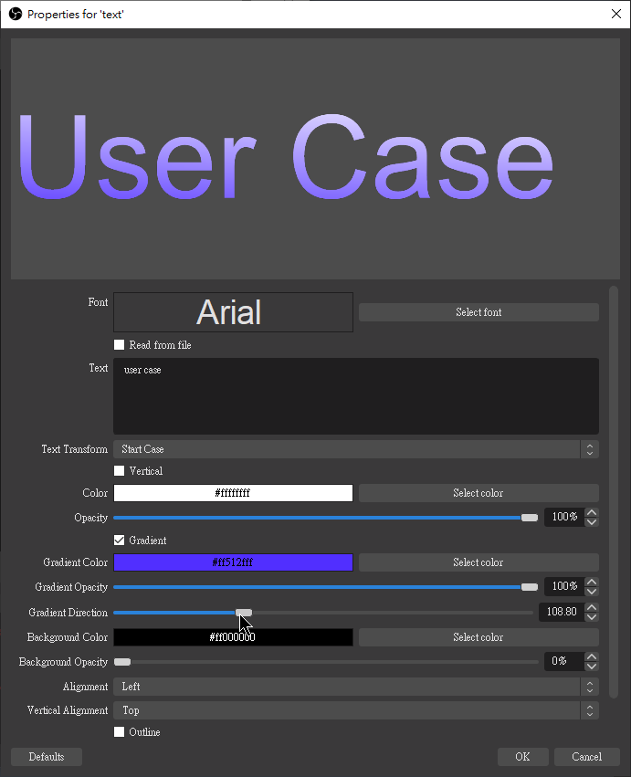
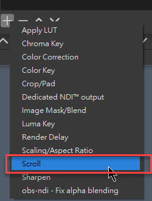
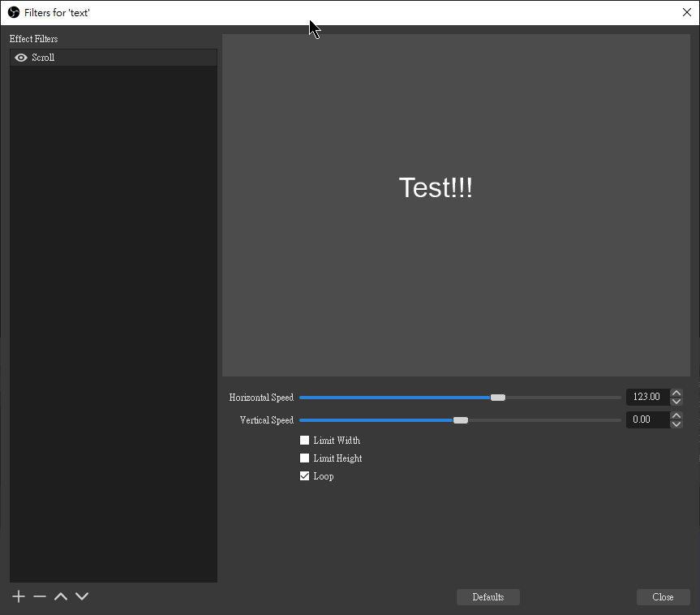

[OBS] 跑馬文字
使用 OBS 內建的功能就可以完成跑馬燈的效果，而以下是使用方法
但這之前，要先了解如何新增顯示文字到 OBS 上
新增文字
在 Source 的地方選擇新增 Text(GDI+)


-
Font: 設定文字字型、樣式、大小等
-
Text: 要顯示的文字
-
Text Transform: 設定英文字大小寫顯示規則
- None: 不調整
- Upper Case: 全部大小
- Lower Case: 全部小寫
- Start Case: 單字開頭文字大小
-
Vertical: 垂直顯示

-
Color: 設定文字顯示顏色
-
Opacity: 飽和度
-
Gradient: 是否開啟顏色漸層效果，開啟後可以選擇第二個顏色達到漸層效果

-
Background Color: 背景顏色設定
-
Background Opacity: 背景顏色飽和度
-
Alignment / Vertical Alignment: 對齊方式
-
Use Custom Text Extents: 自訂文字顯示範圍
當然也可以將檔案的文字讀進來顯示，將 Read from file 勾選起來就可以了，選取檔案後，當檔案內容改變時，要顯示的文字也會跟著改變，雖然有些延遲，但還在可以接受的範圍內
跑馬燈效果
要讓文字跑起來，就要再多加一個 filter 到文字 source 上，透過 scroll filter 就可以做到跑馬燈的效果


新增完 scroll filter 後，透過設定 Horizontal Speed 和 Vertical Speed 來決定文字移動的方向及速度，就是這麼簡單